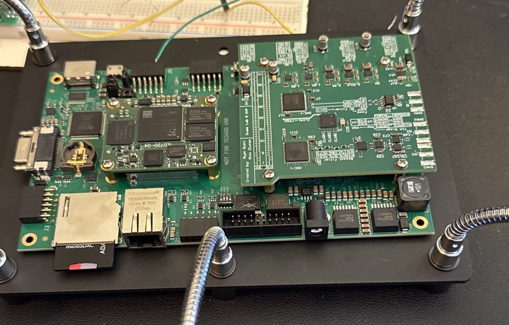
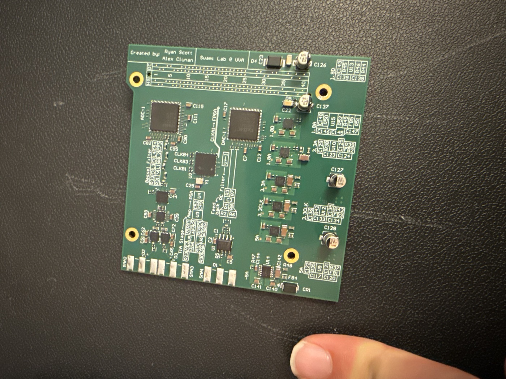
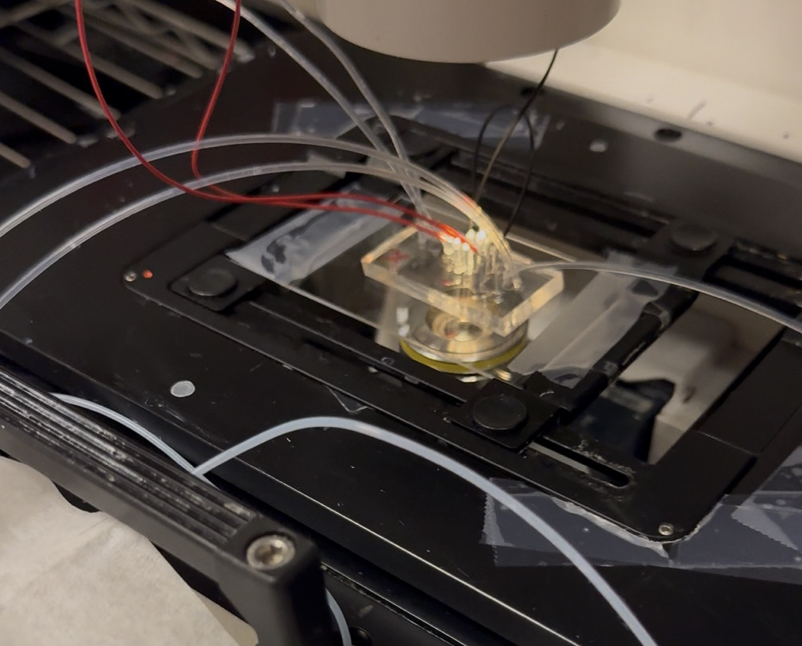
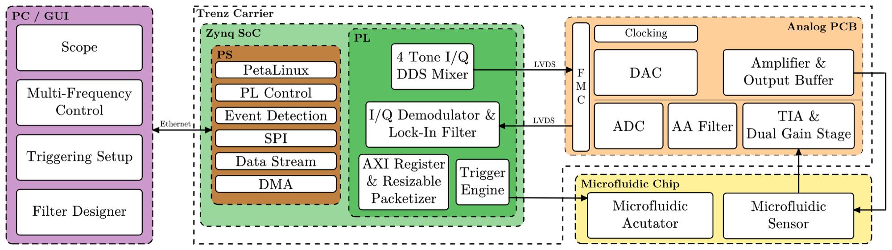

Biophysical Microsystems Lab | UVA | 2026 - present
Multi-Frequency Impedance Analyzer with Real-Time Biological Cell Sorting
A digital lock-in amplifier and deterministic triggering instrument on a Zynq-7020 SoC with a custom 10-layer mixed-signal board. It excites a microfluidic channel with four tones, demodulates magnitude and phase per frequency in fabric, and fires a sorting actuator at a pre-computed timestamp. Two-person capstone continued as funded research; publication targeted mid-2027.
- <5 ms
- detection to actuation
- 4 tones
- parallel lock-in channels
- 200 MSPS
- 16-bit ADC over LVDS
- 10 layers
- custom DAQ board
- SystemVerilog
- Zynq-7020
- AXI DMA
- CIC / FIR
- CORDIC
- PetaLinux
- LVDS
- Python GUI
